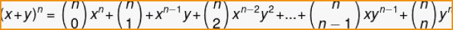
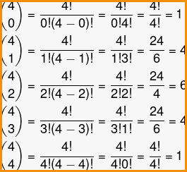

.png)
BINÔMIO DE NEWTON
O binômio de Newton é um binômio qualquer elevado a um expoente natural. O nome é uma homenagem ao matemático Isaac Newton, que fez grandes contribuições para a Matemática, como o desenvolvimento de uma fórmula para calcular potências envolvendo binômios. Newton percebeu que, ao resolver potências do tipo (a + b) n, existe uma regularidade, tornando possível o desenvolvimento de um método para encontrar o polinômio que é solução dessa operação. Além do desenvolvimento do binômio em si, é possível também encontrar o termo geral de um binômio.
FÓRMULA
Chamamos de binômio um polinômio que possui dois termos. Quando calculamos uma potência desse binômio, estamos calculando um binômio de Newton. O cálculo de uma potência de binômio é bastante comum em problemas da Física, Química e da própria Matemática, por isso é de grande importância compreender a fórmula desenvolvida por Newton. Para entender a fórmula, calcularemos as potências de um binômio com expoentes menores. Quanto maior o expoente, mais difícil fica realizar esse cálculo. É possível perceber que quanto maior for o expoente, maior será a solução do binômio de Newton e, por isso, torna-se conveniente utilizar a fórmula:
EXEMPLO
Calcule (a + 2)
Primeiro substituiremos na fórmula x = a, y = 2 e n = 4
Os coeficientes de cada termo são as combinações, conhecidas também como termos binomiais. Note que o expoente do primeiro termo, no caso a, começou em 4 no primeiro e foi decrescendo a cada termo. Já o expoente do segundo termo, no caso 2, começou em 0 e foi crescendo até chegar a 4.
Para calcular o coeficiente, utilizamos a fórmula da combinação:
Calculando as combinações, temos que:
Substituindo na fórmula, encontramos o seguinte polinômio:
(a+2)^4=1 · a^4 + 4 · a^3 · 2 + 6 · a^2 · 22 + 4 · a · 2^3 + 1 · 2^4
Agora calcularemos as potências e as multiplicações:
(a+2)^4=a^4 + 8a^3 + 6 · a^2 · 4 + 4 · a · 8 + 1 · 16
(a+2)^4=a^4 + 8a^3 + 24a^2 + 32a + 16
Para melhorar seus estudos...
Matemática pode ser um conteúdo difícil. Para aumentar seu aprendizado, acesse ao mapa mental e a playlist de vídeo aulas sobre este assunto:
Mapa mental playlist de videoaulas